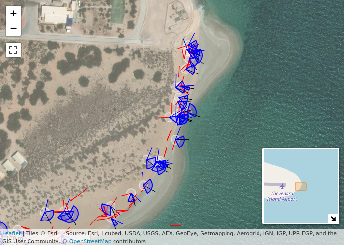

The R package leaflet.circlesector wraps the Leaflet plugin Leaflet.Circle-sector, providing a way to draw circle segments on leaflet maps.
This can be used to visualise marine turtle hatchling (mis)orientation at the time of nest emergence.
See vignette("Introduction") for an explanation of packaged example data and desired visualisation.
library(leaflet.circlesector)
data("fans_tracks")
data("fans_mean")
data("fans_water")
data("outlier_segments")
leaflet_basemap(l_height = 500, l_width = 700) %>%
leaflet::clearBounds() %>%
leaflet::addCircles(
data = fans_tracks,
lat = ~ lat,
lng = ~ lon,
color = 'white',
weight = 2,
radius = 5
) %>%
addCircleSectorMid(data = fans_mean) %>%
addCircleSectorMid(data = fans_water) %>%
addCircleSectorMid(data = outlier_segments) %>%
addCircleSectorMinMax(data = fans_tracks) %>%
leaflet::setView(115.0245, -21.46, 19)
Installation
You can install the development version of leaflet.circlesector from GitHub with:
# install.packages("remotes")
remotes::install_github("dbca-wa/leaflet.circlesector")